Al Jun Mado
Associate Software Engineer | Virtual Assistant
Associate Software Engineer with a strong background in remote operations, CRM systems, and administrative support. Experienced in data handling, process improvement, and cross-functional collaboration, supported by formal training in SDLC, Python, SQL, Power BI, and applied Generative AI tools. Built and deployed an accessible web platform using HTML, CSS, and JavaScript. Known for adaptability, problem-solving, and translating real-world business requirements into practical technical solutions.

 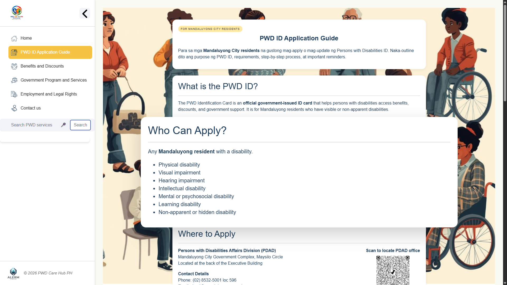
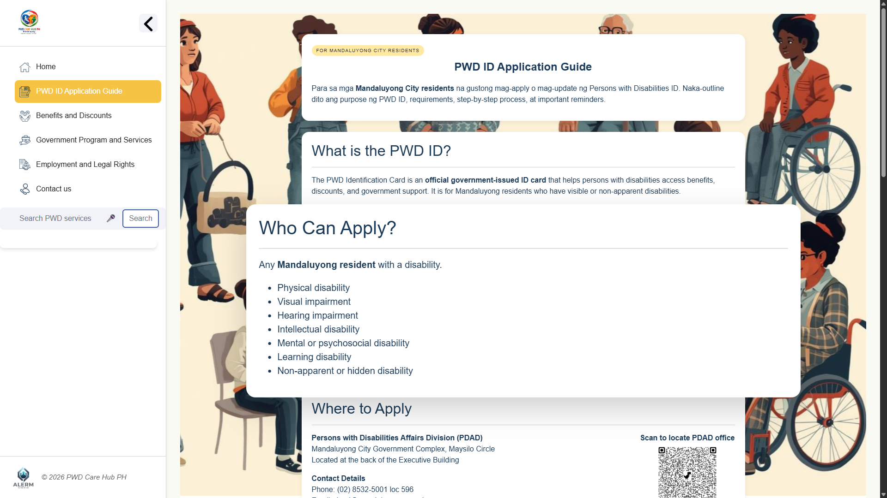

 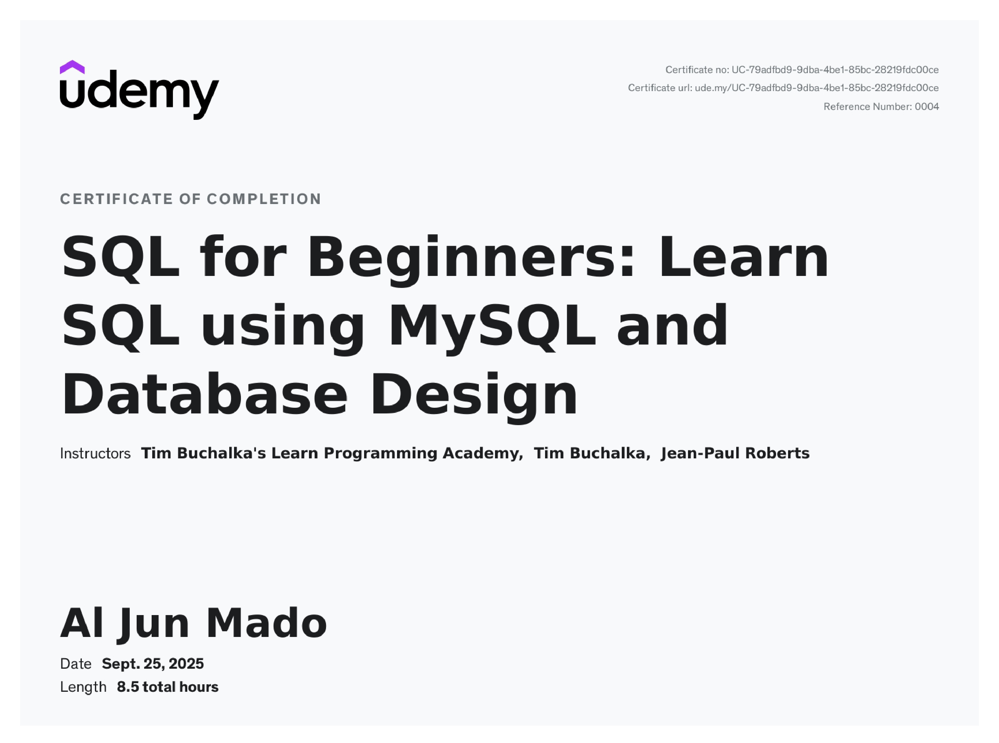
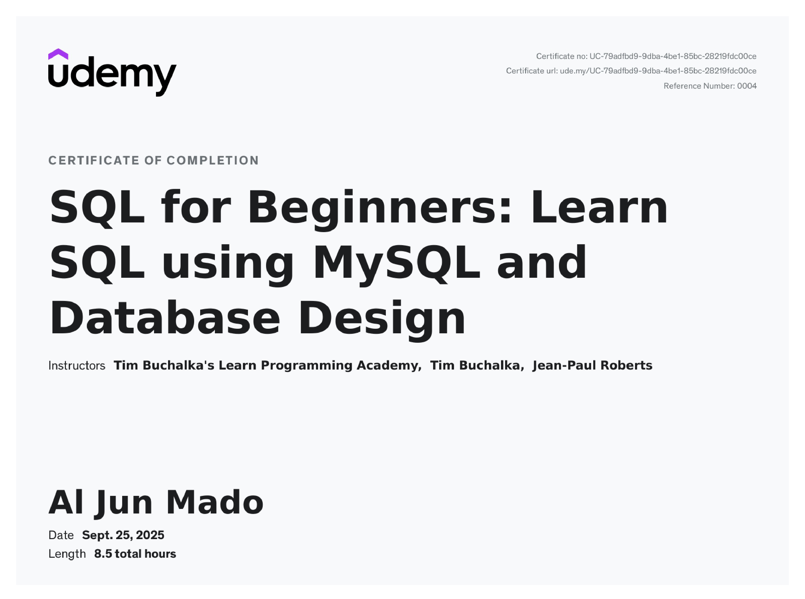


 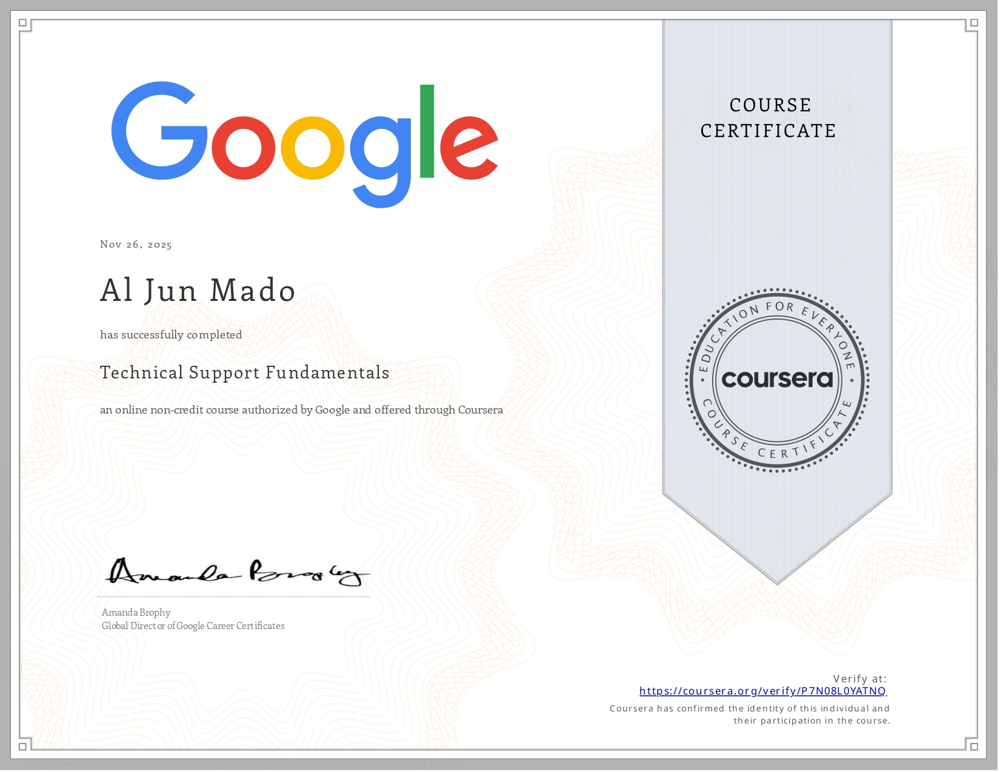
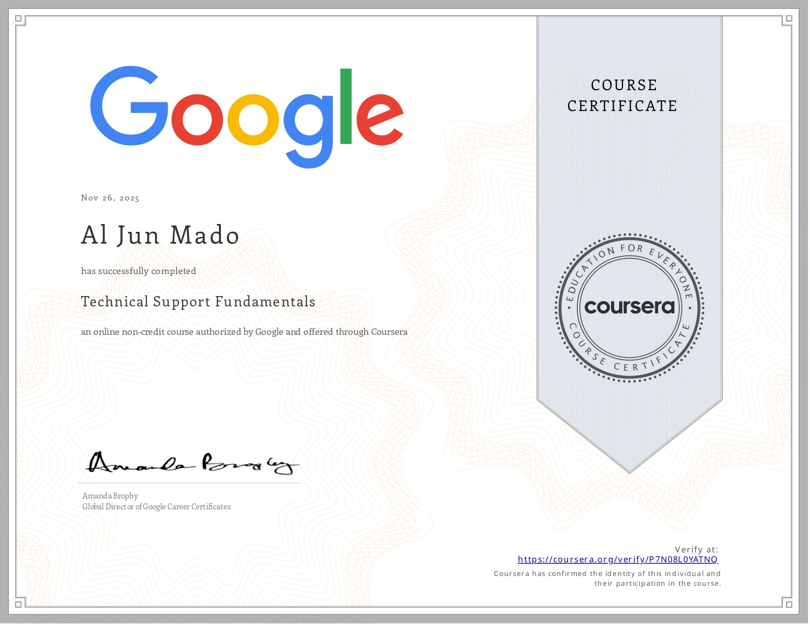


 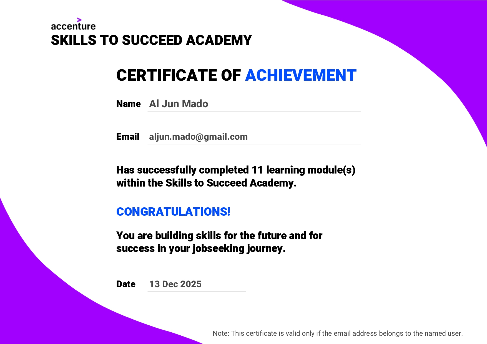
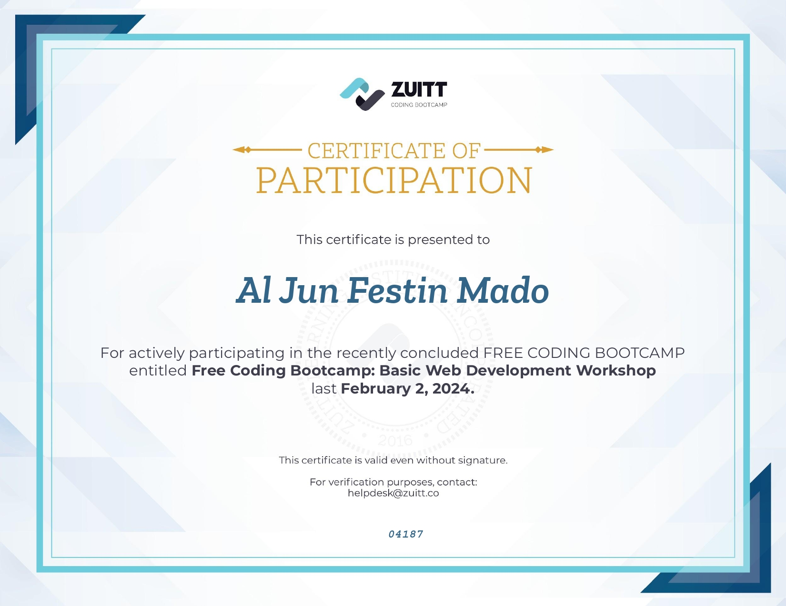
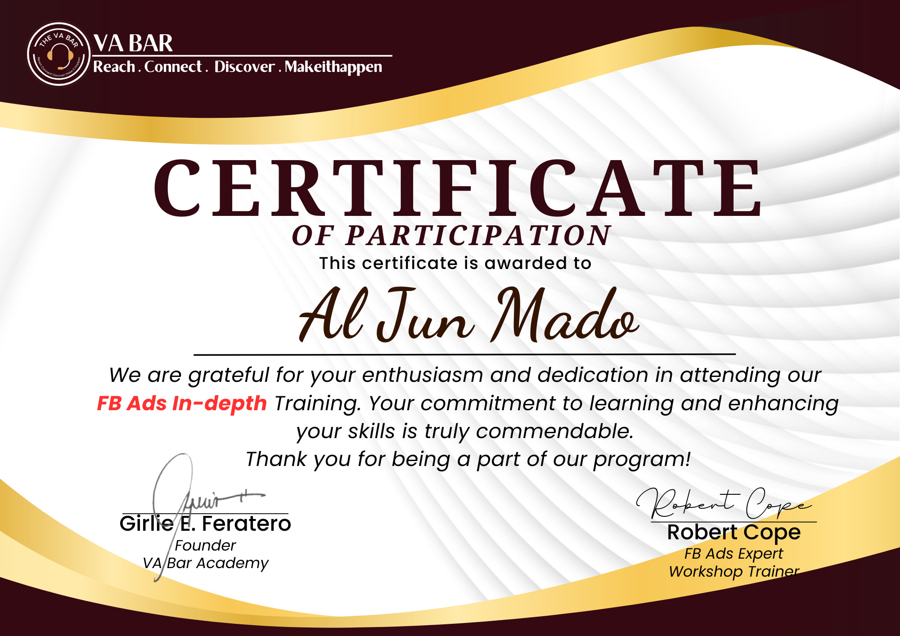
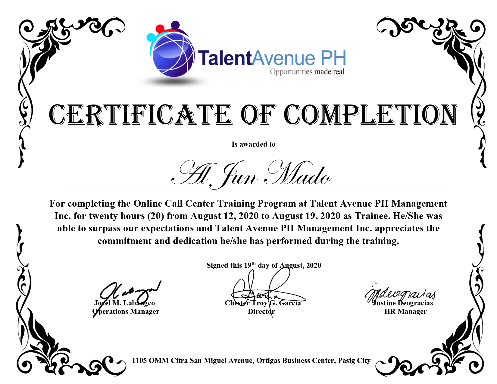
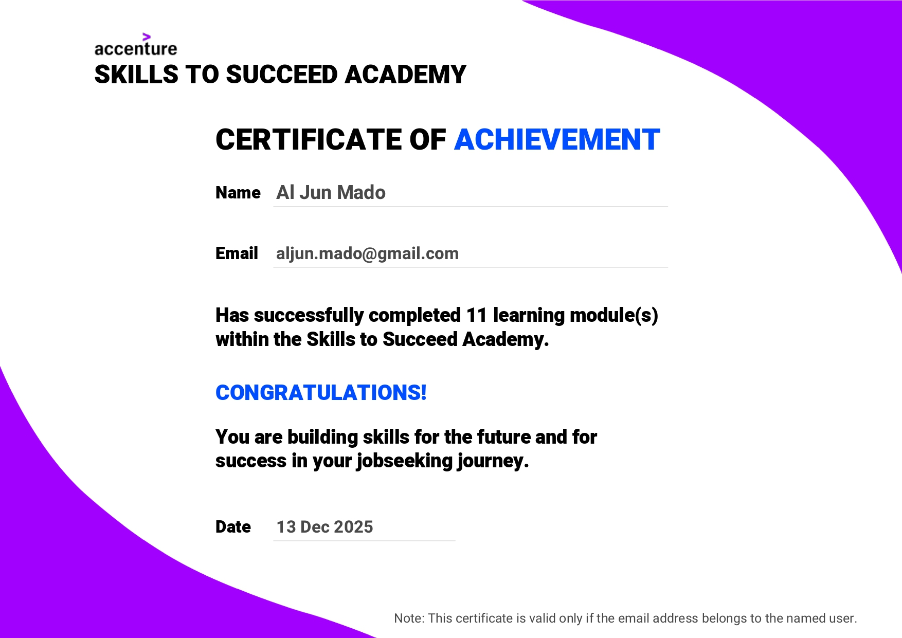
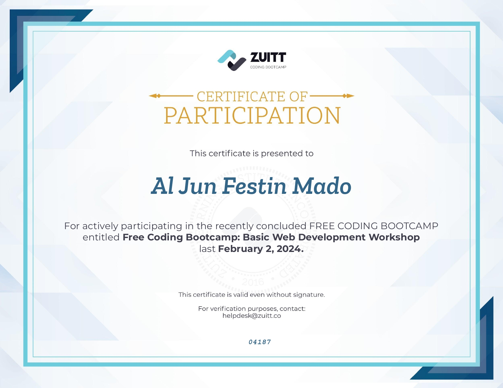
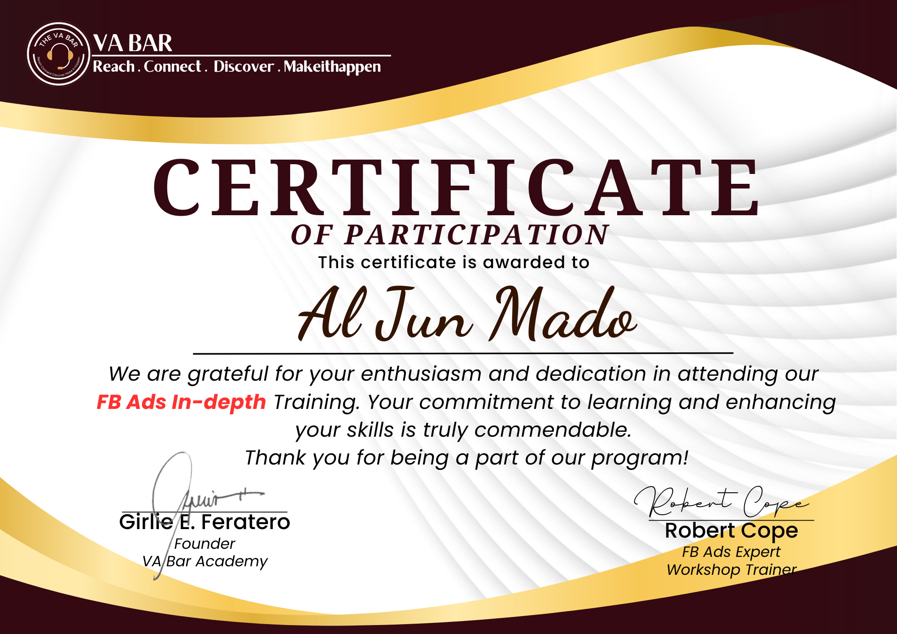
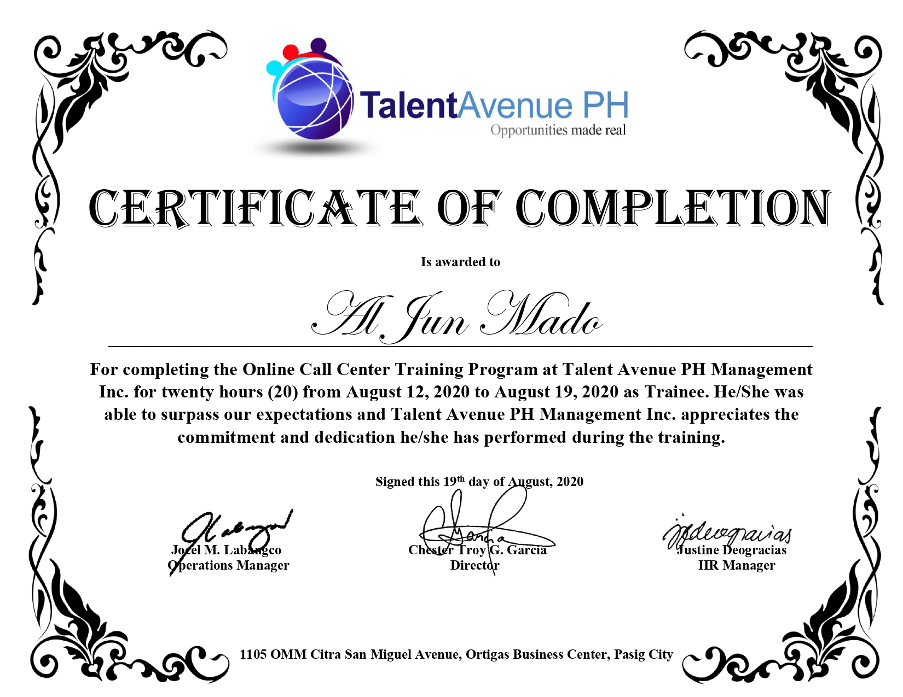